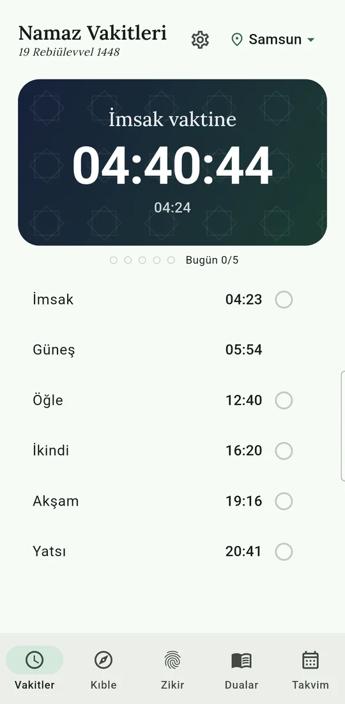
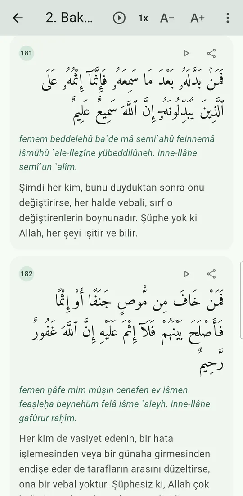
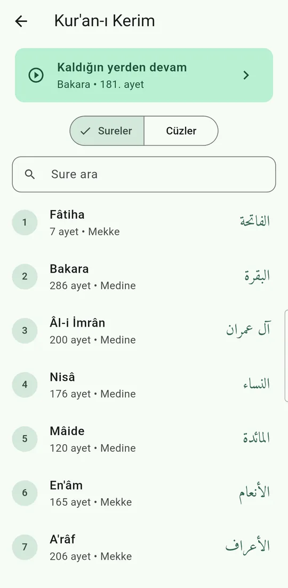
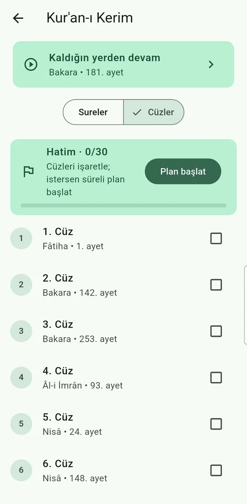
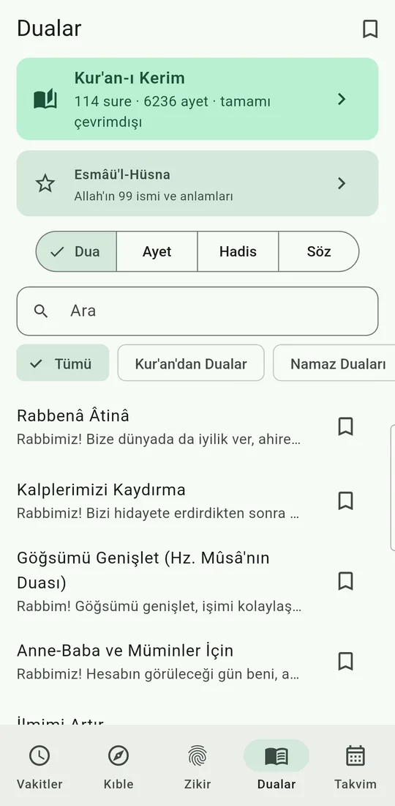
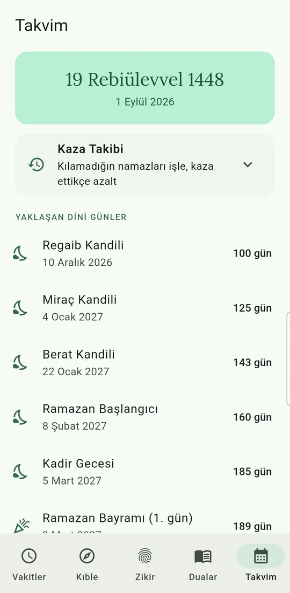
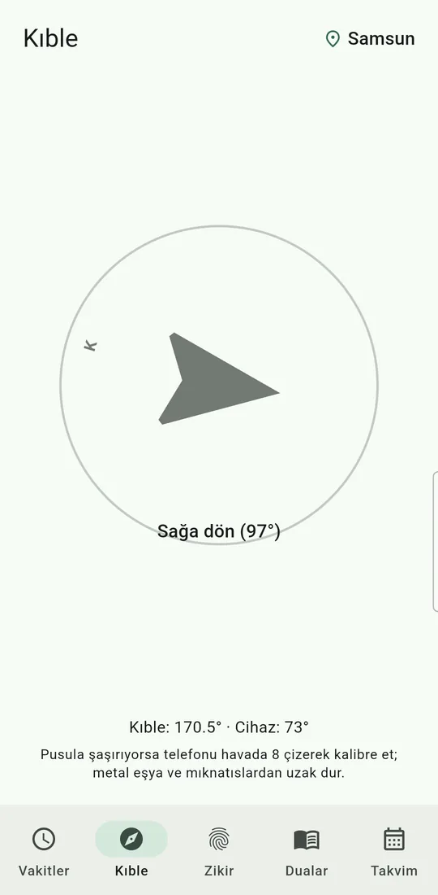
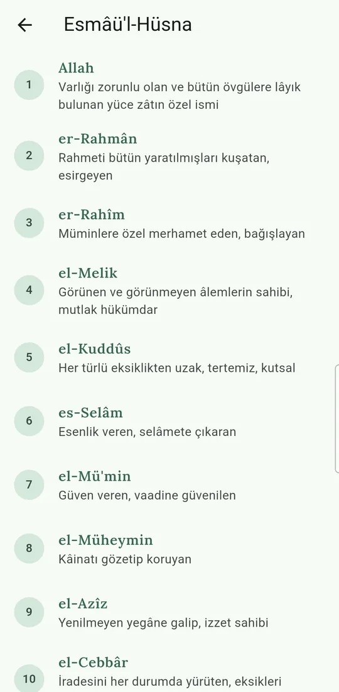

Uygulamadan kareler








Namaz vakitleri uygulamasında neler var?
Ezan vakti bildiriminden Kur'an-ı Kerim'e kadar günlük ibadetin tamamı tek uygulamada, hepsi cihazınızda.
🕌 Diyanet uyumlu vakitler
81 il için imsak, güneş, öğle, ikindi, akşam ve yatsı. İnternet varken Diyanet'in resmî tablosu, yokken cihazda Diyanet yöntemiyle hesap; asla vakitsiz kalmazsınız.
🔔 Dakikasında ezan bildirimi
Vakit öncesi 5–45 dakika hatırlatma, vakit başına sesli veya sessiz seçim. Kısa tekbir tonu ya da dört müezzinden tam ezan; seçerken anında dinlersiniz.
🕋 Kur'an-ı Kerim, tamamı cihazınızda
114 sure: Arapça metin, Elmalılı Hamdi Yazır meali ve Türkçe okunuş bir arada. Mişari Raşid el-Afâsî tilaveti, çalan ayet vurgusu, hız seçeneği, kaldığınız yerden devam.
📗 Hatim takibi
Cüz cüz hatim takibi ve 1, 3 veya 6 aylık süreli hatim planı. Ayet paylaşma ve yazı boyutu ayarı.
🌙 Kilit ekranı sayacı
Sıradaki vakte canlı geri sayım ve günün ayeti veya hadisi; telefonu açmadan görün.
🖼️ Ana ekran widget'ları
Vakte geri sayım, günlük vakitler ve günün içeriği. Şeffaf cam veya kart stili, karanlık temaya tam uyum.
🧭 Kıble pusulası
Hassas kıble yönü; kıbleye dönünce titreşimle onay.
📿 Zikirmatik
33, 99, 500 veya serbest hedef; titreşimli sayım ve kalıcı toplam.
📖 Kaynaklı dua ve hadis kitaplığı
Namaz duaları (Sübhâneke, Ettehiyyâtü, Kunutlar), günlük dualar, ayetler ve sahih hadisler. Arapça metin, okunuş ve anlam; hepsi kaynak gösterir.
📅 Hicri takvim ve kaza takibi
Bugünün hicri tarihi, yaklaşan kandiller ve kandil sabahı hatırlatması. Kaza namazı takibi (5 vakit ve vitir) ve kerahat vakti uyarısı.
✨ Esmâü'l-Hüsna
Allah'ın 99 ismi, okunuşları ve anlamlarıyla.
👵 Büyük Yazı Modu
Tek dokunuşla tüm uygulamada büyük, okunaklı yazı; anne babalarımız için.
🛡️ Bildirim Güvencesi
Bildirim Sağlık Testi ve cihazınıza özel pil ayarı rehberi; "bildirim gelmedi" derdine son.
Vakitler ve içerik nereden geliyor?
Uygulama hesabını kendi uydurmaz; her içeriğin kaynağı bellidir ve uygulama içinde gösterilir.
- Namaz vakitleri: Diyanet İşleri Başkanlığı resmî takvimi (81 il). İnternet yokken aynı yöntemle cihazda hesaplanır, fark en fazla bir iki dakikadır.
- Kur'an metni: Tanzil projesi Arapça metni; meal: Elmalılı Hamdi Yazır.
- Tilavet: Mişari Raşid el-Afâsî; ezan: Ahmed el-İmadi, Nasser el-Katami, Macid el-Hamathani, Muhtar Hac Slimane.
- Hadisler: sahih kaynaklardan, kitap ve numara bilgisiyle.
Sık sorulan sorular
Namaz Vakitleri uygulaması internetsiz çalışır mı?
Evet. Vakitler cihazınızda Diyanet yöntemiyle hesaplanır; Kur'an metni, meal, okunuş ve dualar uygulamanın içindedir. İnternet yalnızca Diyanet'in resmî vakit tablosunu ve sesli tilaveti indirmek için kullanılır, ikisi olmadan da uygulama tam çalışır.
Vakitler Diyanet takvimiyle aynı mı?
Evet. 81 il için Diyanet İşleri Başkanlığı'nın resmî tablosu esas alınır; internet varken vakitler bu tablodan birebir gösterilir. Google aramasında çıkan vakitler farklı bir hesap yöntemi kullandığı için birkaç dakika sapabilir; camilerde ezan Diyanet takvimine göre okunur.
Uygulama ücretsiz mi, reklam var mı?
Tamamen ücretsiz. Reklam, uygulama içi satın alma ve abonelik yoktur.
Hangi telefonlarda çalışır?
Android 8.0 ve üzeri tüm telefon ve tabletlerde çalışır. İndirme boyutu yaklaşık 17 MB'dir. iOS sürümü yol haritamızdadır.
Ezan sesi seçilebilir mi?
Evet. Her vakit için sesli veya sessiz bildirim seçebilir, kısa tekbir tonu ya da dört müezzinden birinin tam ezanını kullanabilirsiniz: Ahmed el-İmadi, Nasser el-Katami, Macid el-Hamathani ve Muhtar Hac Slimane. Seçerken anında dinlersiniz.
Verilerim toplanıyor mu, konum izni istiyor mu?
Hayır. Hesap, reklam ve analitik kütüphanesi yoktur; hiçbir kişisel veri toplanmaz. Konum izni istenmez, ilinizi listeden kendiniz seçersiniz.
Ezan bildirimi gelmezse ne yapmalıyım?
Ayarlar'daki Bildirim Sağlık Testi'ni çalıştırın. Uygulama, cihazınızın markasına göre pil ayarı rehberi gösterir; çoğu telefonda sorun pil optimizasyonundan kaynaklanır ve bir dokunuşla çözülür.